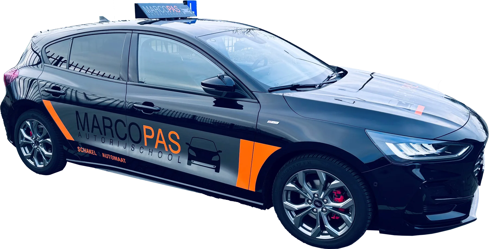

Geen les verspild
Dezelfde instructeur van les één tot je examen, dus je hoeft nooit opnieuw te beginnen.
"Marco neemt echt de tijd om ervoor te zorgen dat je de stof goed begrijpt."Bram, via Google
Autorijschool in Breda · sinds 2004

Geen wisselende instructeurs, geen wachtlijst. Wel iemand die precies weet waar jij staat.
Dezelfde instructeur van les één tot je examen, dus je hoeft nooit opnieuw te beginnen.
"Marco neemt echt de tijd om ervoor te zorgen dat je de stof goed begrijpt."Bram, via Google
Lessen van 60 minuten met rustige uitleg. Eerst snappen, dan doen.
"Hij legt alles rustig en duidelijk uit en zorgt ervoor dat je stap voor stap beter wordt."Google-review
Je oefent de examenroutes van Breda tot ze vertrouwd voelen.
"Zorgt ervoor dat je met vertrouwen achter het stuur zit."Renate, via Google
Vijf stappen, en je weet precies wat je te wachten staat.
Een echte les van 60 minuten. Je rijdt zelf en voelt meteen of het klikt.
Een eerlijke inschatting van je lessen, en je kiest een pakket of losse lessen.
Lessen op werkdagen tussen 8:00 en 18:00, te plannen via de app. Thuis werk je aan je theorie.
Een proefexamen bij het CBR. Gaan je manoeuvres goed, dan krijg je vrijstelling op je examen.
Ongeveer 55 minuten, in je eigen vertrouwde lesauto. Marco vraagt het examen voor je aan.
Drie routes, dezelfde vaste instructeur.
Straks elke auto kunnen rijden. Gemiddeld 40 tot 50 lessen.
Meer over schakelGeen koppeling, sneller klaar. Gemiddeld 35 tot 45 lessen in de Ford Puma.
Meer over automaatOnline leren in je eigen tempo. Je certificaat blijft anderhalf jaar geldig.
Meer over theorie"Marco heeft zeker praatjes, maar dat maakt de lessen juist gezellig. Naast de gezelligheid wordt er serieus gewerkt."
Thijs Visser · Google review
Vijftig Google-reviews, allemaal vijf sterren.
Super fijne rijlessen gehad bij Marco! Hij geeft duidelijke uitleg, heeft veel geduld en zorgt ervoor dat je met vertrouwen achter het stuur zit.
In één keer geslaagd dankzij deze rijschool, helemaal top! De lessen waren duidelijk, leerzaam en hebben mij goed voorbereid op het praktijkexamen.
Altijd gezellig en super duidelijk. Marco legt alles rustig uit, geeft goede tips en zorgt ervoor dat je met vertrouwen leert rijden. 100% aan te raden.
Marco geeft sinds 2004 rijles in Breda en werd in 2016 verkozen tot beste rijschool van de stad. Wie bij hem lest kent het recept: serieus werken, met een praatje dat de spanning uit de auto haalt.
Lees het verhaal van MarcoFoto volgt. Tot die tijd herken je hem aan de zwart met oranje lesauto en het gezellige praatje.
Marco haalt je op in heel Breda en de dorpen eromheen. Na 22 jaar kent hij de examenroutes van het CBR, en dat merk je op je examen.
De drie die Marco het vaakst hoort.
Gemiddeld 40 tot 50 lessen voor schakel en 35 tot 45 voor automaat. Na je proefles krijg je een inschatting op maat.
Ja, altijd. Van je eerste les tot en met je examen rijd je met Marco zelf.
Nee. Je betaalt in één keer of in twee of drie termijnen.
Een proefles van 60 minuten voor €55. Daarna weet je precies waar je aan toe bent.
Liever bellen? Marco neemt zelf op: 06 2210 9542